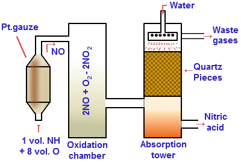

Rocket Engine Testing
Experiment Log by Ishan Chadha
Potassium Nitrate Synthesis
Potassium nitrate's most efficient synthesis method for purposes in fuel technology is known as the Birkeland-Eyde process, in which atmospheric nitrogen is fixed into nitric acid and the nitrate anion from the nitric acid is used in synthesizing potassium nitrate. Since nitrogen fixation itself either occurs naturally or require relatively expensive equipment such as quartz, I conducted a reaction in which ammonium nitrate reacted with potassium chloride in order to form potassium nitrate. The potassium chloride is found as "sodium-free" salt and the ammonium nitrate is found in cold packs, so, after obtaining the correct amounts of each chemical (with a slight excess of potassium chloride), the reaction went through and was successful. This fuel was then tested as black powder in a rocket engine, in which the specific impulse ended up being 103 seconds. The lower efficiency was probably due to impurities in the chemically produced potassium nitrate.Birkeland-Eyde Process
Sugar Rocket Abstract
Prevailing rocket technologies revolve around combustion of different chemicals in various ratios, which could be replaced by rocket engines that utilize ionic thrust or photon sails. This rocket was the first step in researching fuel efficiency for numerous fuels that could serve as alternatives to current fuels. We attempted to substantiate our hypothesis by testing a rocket comprised of white powder for fuel, kitty litter to act as an adherent, and a 5” long PVC body. The white powder mixture had a 65:35 potassium nitrate:powdered sugar fuel ratio. This was attached to a spring with constant, k = 27.27 N/m, which was attached to a 20 lb weight. After that, a marker was attached the the rocket using a piece of adhesive tape, which would draw along some measuring tape as the rocket moved forward. It was determined that the total output force was approximately 3.38 N, and the specific impulse was around 125 seconds, which is a decent efficiency for a rocket fuel. In order for something such as the photon sail to be as efficient, it was concluded that the engine would need to have a very high specific impulse due to its low propellant mass.Sugar Rocket Research Outline
There are three parts to a rocket’s propulsion process.First, the fuel and oxidizer are pumped through separate tubes with great amounts of pressure.
Then, the fuel and oxidizer, which are currently undergoing lots of pressure, are released in the chamber in which they combine and react in some way.
Depending on the reaction that occurred, the fuel is ignited in some way which causes propulsion in the rocket.
There are three main ways fuel can ignite.
Petroleum
These are refined from crude oils and are a mixture of hydrocarbons.They are used with liquid oxygen as the oxidizer.
The liquid oxygen and petroleum combust when they meet in the chamber and create a lot of propulsion.
The downside to this fuel is that the operation time is limited due to residue buildup in the gas chambers.
Cryogenic
These are liquified gas propellants stored at very low temperatures.The most frequent usage of this is with liquid hydrogen as the fuel and liquid oxygen as the oxidizer.
When liquid hydrogen and liquid oxygen combine in the chamber, a lot of heat is applied so that they react and turn into water and then are heated to steam.
This steam really needs to expand, so a lot of pressure builds up to propel the rocket.
The downside to this fuel is that it needs to be stored with extreme care due to its low temperature, but it is extremely efficient.
Hypergolic
These propellants ignite spontaneously with contact in the combustion chamber. They do not need an ignition source.These fuels are highly toxic and must be handled with extreme care.
The most common fuel-oxidizer combination is hydrazine and nitric acid.
More Research available here: Prezi
Our Question and Hypothesis
What can we use for our rocket fuels to make them efficient, nonpollutive, and easy to handle?What should the fuel to oxidizer ratio in the rockets be, if fuel is needed?
What will be our adherent, or do we even need one?
We hypothesize that cryogenic fuels are probably the best source of fuel for rockets.
We thought that sugar combustion would be one of the safest and most non pollutive way to test our hypotheses.
Sugar combustion is really a combination of all of these fuel types, so it made sense to test it.
There are two ways that sugar combustion can be tested:
We can use famous rocketeer Dan Pollino’s principle of there being more oxidizer than fuel:
65% Potassium Nitrate, 15% sucrose, 19% corn syrup, (water not included) - we plan to use High Fructose Corn Syrup 42 because it has the ability to allow more sugar to be oxidized
We can use a higher concentration of fuel:
1.65 Potassium Nitrate, 1.1 sucrose, 1.5 kitty litter